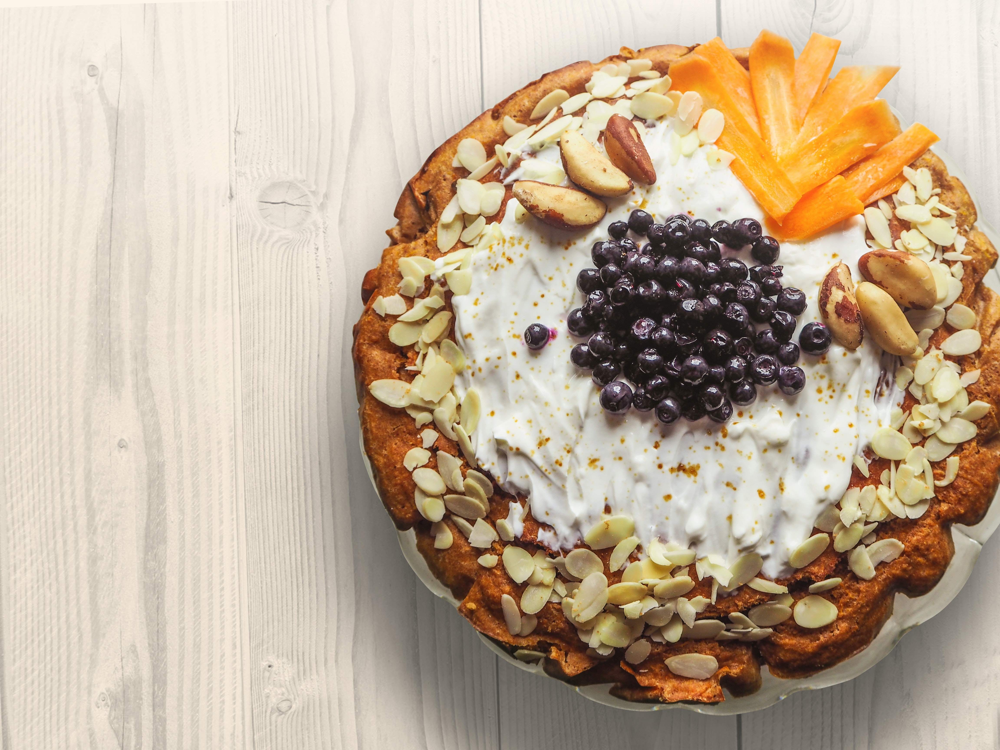
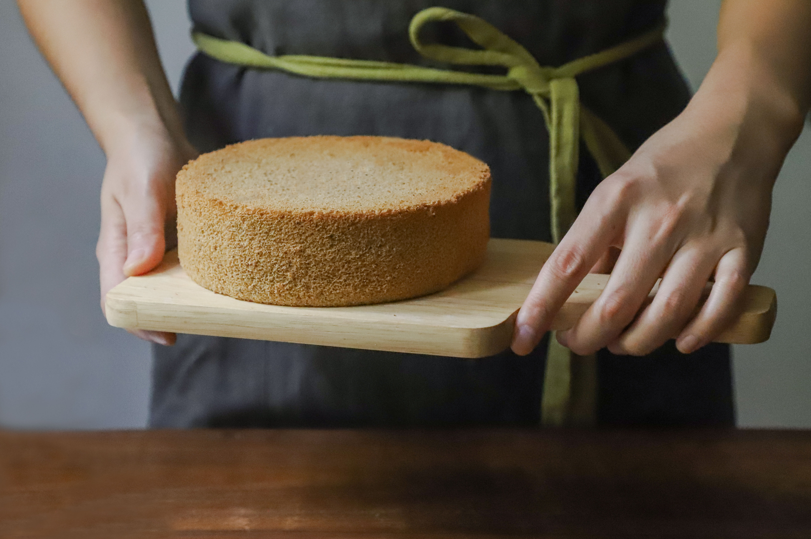
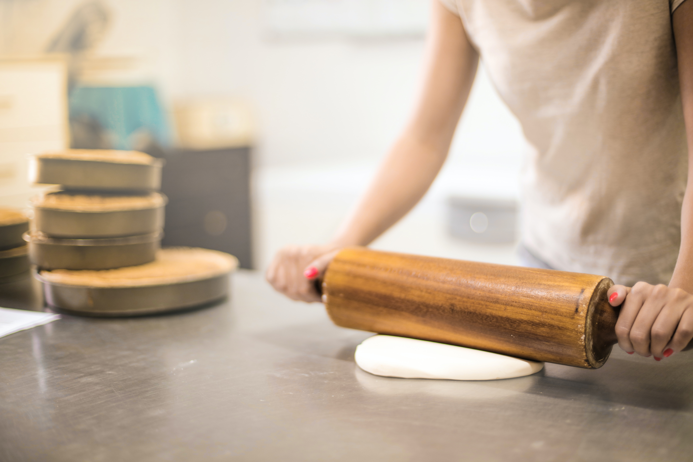
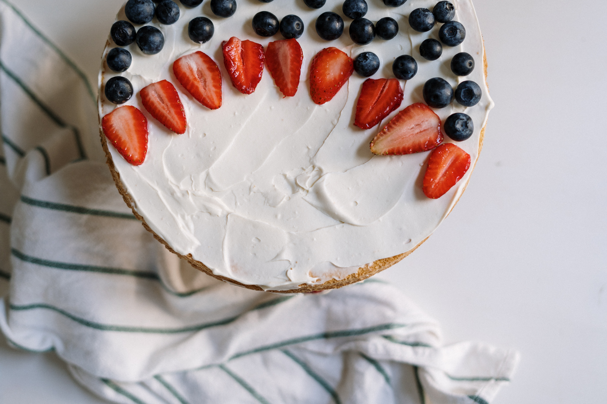

Your Sweet
Pleasure
The Most popular
Bakery

We made the flavours
Real
The Sweetest
Prize

Enjoy the little
Moments
Customize your
Dreams
Every sweet second
Counts

The Most popular
Bakery

The Most popular
Bakery